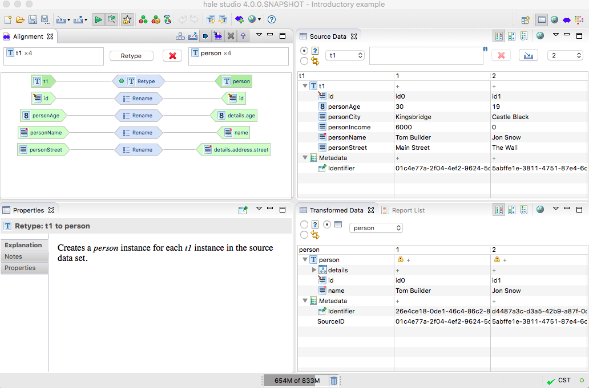

Data perspective
In the data perspective you can examine the source and
transformed data, e.g. comparing a source instance with the
corresponding transformed instance. Through a filter query you can
select certain instances for analysis.

Following is a short description of the perspective's views:
- The Source Data view displays samples of the loaded
source data. A filter query can be used to control which instances
are displayed.
- The Transformed Data view displays samples of the
transformed data. By default it is synchronized to the Source
Data view and contains the transformation result of the instances
represented there.
- The Alignment view displays the current alignment per
type relation and allows editing or removing mapping cells.
- The Properties view displays information on the
current selection, in the above image this is the explanation of the
mapping cell selected in the active Alignment view.